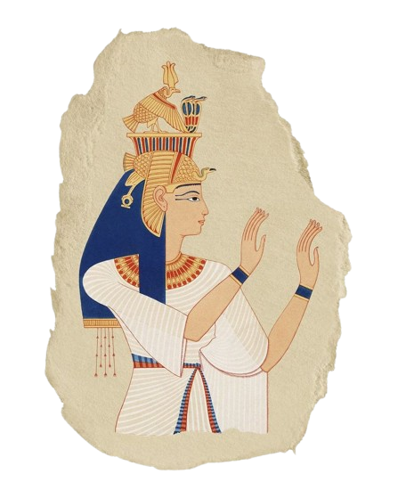
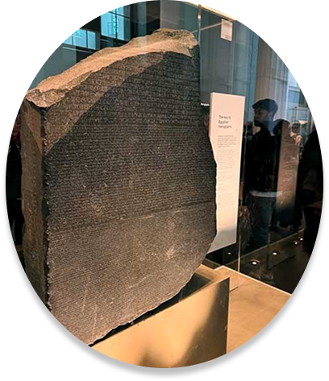
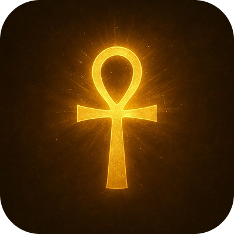
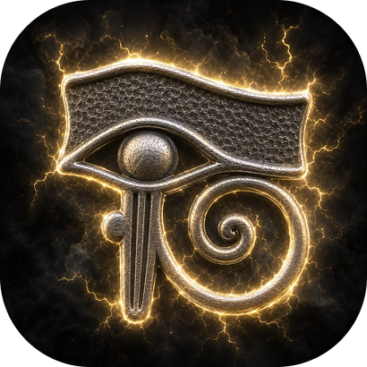
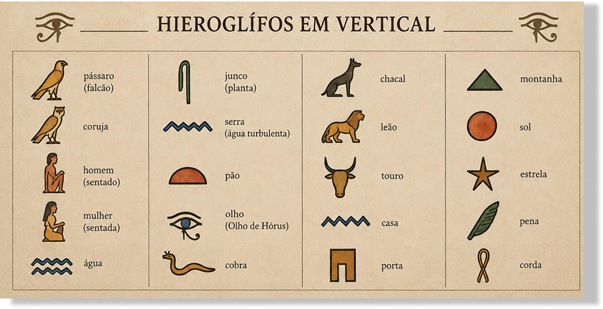

Símbolos HIERÓGLIFO
O "Alfabeto" de Sinais Unilíteros
Os hieróglifos egípcios não formam um alfabeto tradicional com letras fixas, mas contêm um grupo de cerca de 24 sinais chamados unilíteros, que funcionam como sons individuais equivalentes a consoantes.

SÍMBOLOS MAIS FAMOSOS
-
O Ankh (Cruz Ansata):
O hieróglifo que representa a vida eterna. Visualmente se parece com uma cruz com um laço no topo.

-
O Olho de Hórus (Wedjat):
O hieróglifo que simboliza proteção, poder real e boa saúde.

IMAGENS DOS Símbolos
